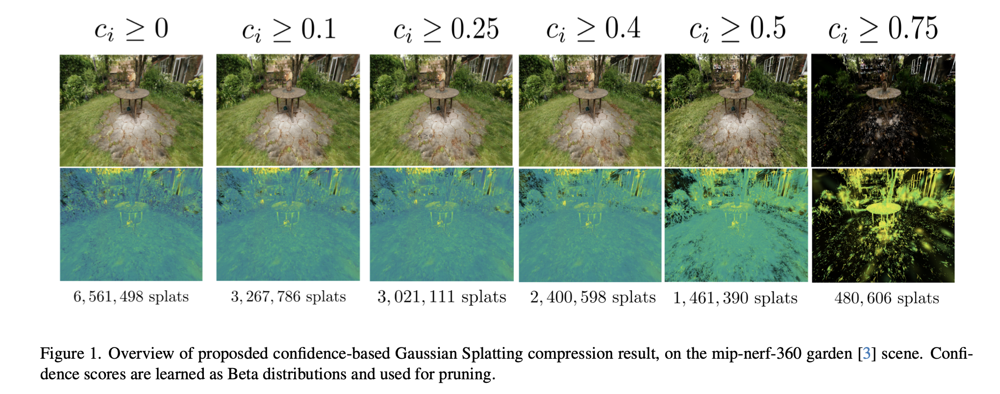
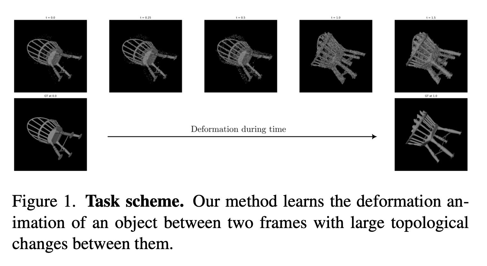
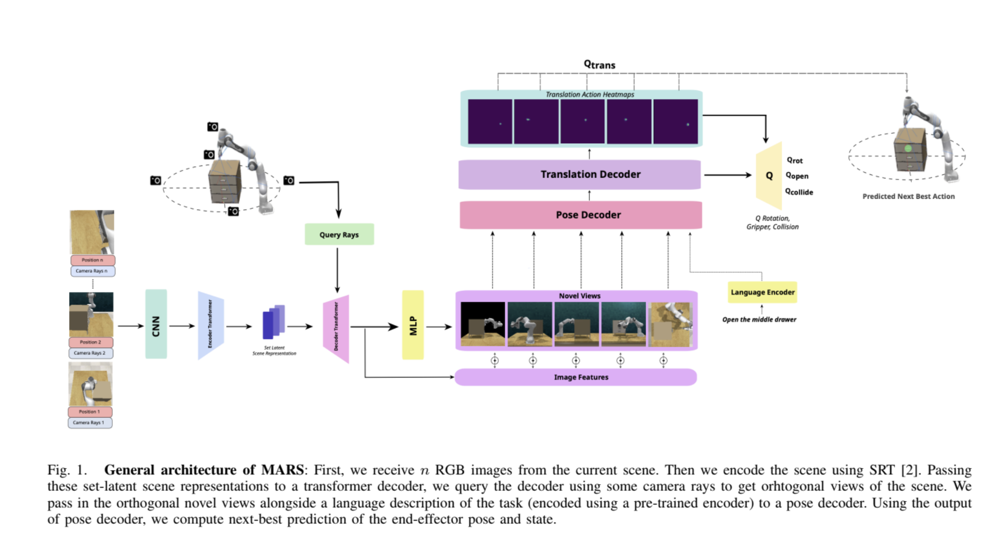
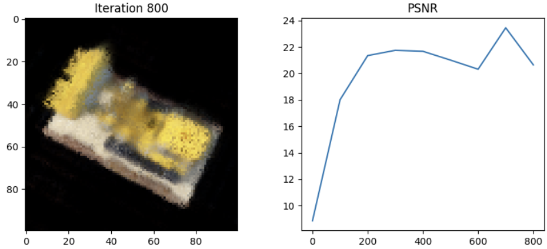
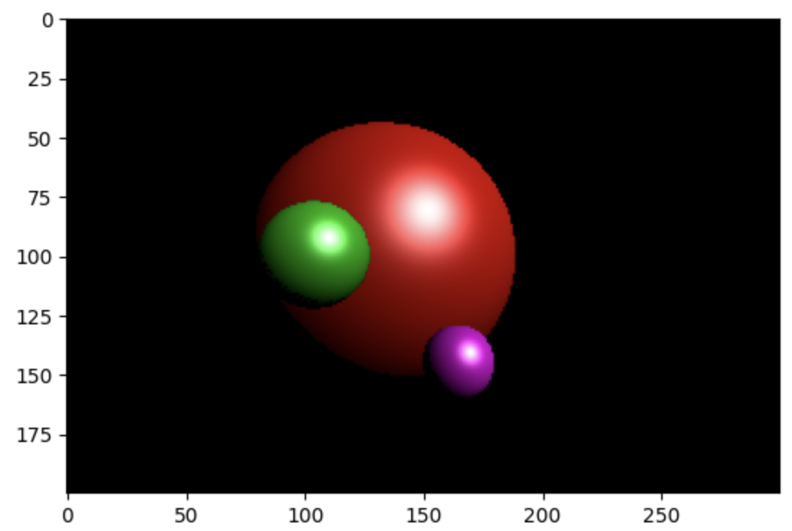
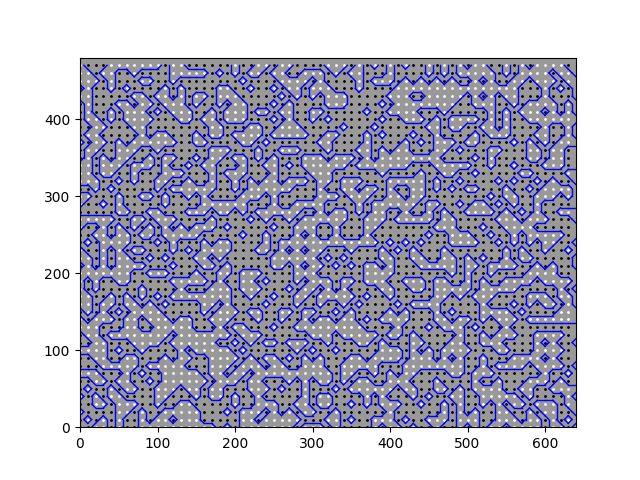
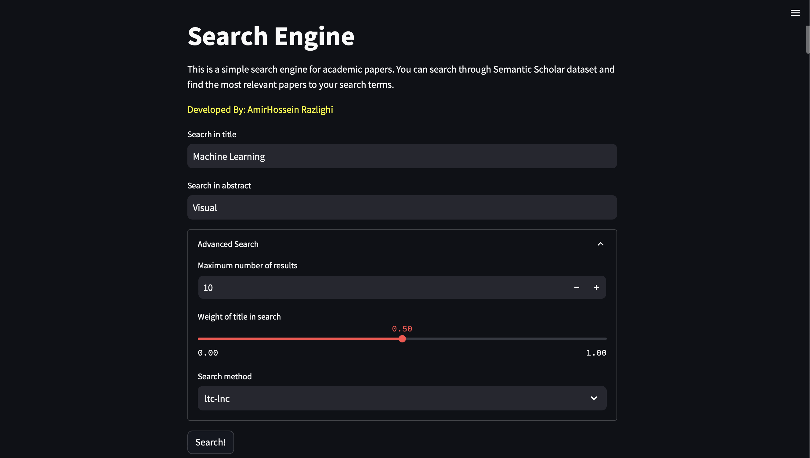
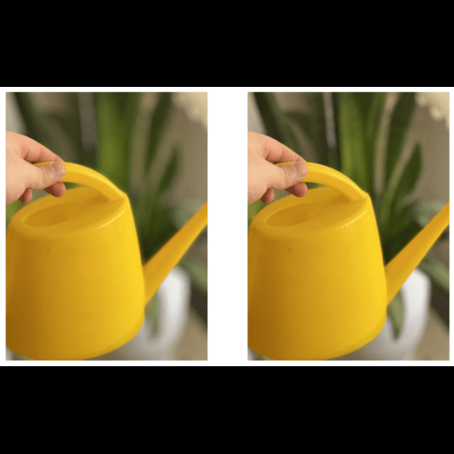
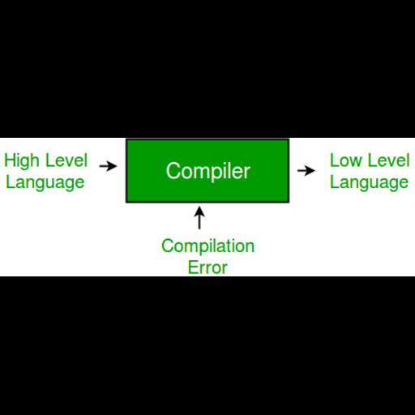

AmirHossein (Amir) Razlighi
Research Assistant · GrUVi Lab @ SFU · 3D Vision · Generative Models
I'm a PhD student and research assistant at GrUVi Lab @ SFU and UCY, supervised by Prof. Arash Mahdavi-Amiri (SFU), Prof. Daniel Cohen-Or, and Prof. Yiorgos Chrysanthou (UCY). My research sits at the intersection of 3D computer vision, generative AI, and video generative models — I'm fascinated by how machines perceive, reconstruct, and generate realistic 3D worlds. I'm always open to collaborations and happy to chat about anything vision, graphics, or beyond!
Publications
Sound Sparks Motion: Audio and Text Tuning for Video Editing
arXiv preprint · Under review at SIGGRAPH Asia 2026
A test-time tuning framework for motion-focused video editing inside audio-visual generative models. Instead of retraining, we tune two lightweight variables — an audio latent and a text-conditioning residual — guided by vision-language model feedback. The learned controls transfer across videos, suggesting they capture reusable motion directions in the model's multimodal conditioning space.

Confident Splatting: Confidence-Based Compression of 3D Gaussian Splatting via Learnable Beta Distributions
Preprint, 2025
A lossy compression method for 3DGS using learnable Beta-distribution confidence scores. Low-confidence splats are pruned while preserving visual fidelity; the method is architecture-agnostic and introduces average confidence as a new scene-quality metric.

N4DE: Neural 4D Evolution under Large Topological Changes from 2D Images
Preprint, 2024
Novel architecture + temporal consistency technique for 4D reconstruction under large topological changes. Introduces a Gaussian Splatting rendering scheme and a geometry-appearance disentanglement framework learned directly from RGB images.

MARS: Multi-task Action Prediction for Robot Manipulation based on Scene Representation
Preprint, 2023
MARS uses Scene Representation Transformers to render novel views from RGB observations, then predicts end-effector poses and gripper states from language-conditioned keyframe demonstrations.
Research Experience
GrUVi Lab @ Simon Fraser University
Research Assistant
Supervised by Prof. Arash Mahdavi-Amiri and Prof. Daniel Cohen-Or. Working on video generative models and 3D computer vision.
INSAIT
Summer Research Intern
Supervised by Dr. Danda Pani Paudel. Continued the ETH project: Dynamic 3D reconstruction using SDFs integrated into the Gaussian Splatting pipeline. Created a dataset of challenging deformable scenes (breaking sphere, growing plant, etc.) and designed a full reconstruction pipeline.
LinkedIn RecommendationETH Zurich
Research Assistant
Supervised by Dr. Danda Pani Paudel. NeRF models for dynamic 3D reconstruction; studied SDFs to disentangle geometry and appearance. Developed morphing between two SDFs from RGB images and SDF-based regularizers for inverse rendering.
LinkedIn RecommendationUniversity of Toronto
Research Assistant (Summer Internship)
Supervised by Dr. Florian Shkurti and Dr. Animesh Garg. Vision-based robotic manipulation: NeRF-based scene encoding, customized SRT, adapted the ARNOLD dataset for robot scenes, and worked on Google's PerAct model. Code.
Industry Experience
Tapsi Co.
Data Scientist — MAP Team (ETA & Navigation)
Senior Expert Data Scientist
Led end-to-end R&D → production delivery of two projects: GNN for spatio-temporal city modeling + ETA prediction; and an attention-based post-processing model for ETA enhancement. Improved key business metrics including ETA accuracy and map-coloring accuracy.
Expert Data Scientist
Tapsi Co.
Junior AR Systems Engineer (University CO-OP)
- First member of Tapsi Lab R&D; used CV to improve ride-hailing UX.
- Built the Driver-Arrived AR feature from scratch — driver position via camera + GPS.
- Ran the complete AR pipeline client-side with TensorFlow.js and a custom AR.js fork.
- Collaborated across design, business, and DevOps teams.
Education
University of Cyprus
PhD. Computer Science
Co-supervised by Prof. Yiorgos Chrysanthou, Prof. Arash Mahdavi-Amiri (SFU), and Prof. Daniel Cohen-Or.
Sharif University of Technology
BSc. Computer Engineering
Cumulative GPA: 19.27 / 20 · Major GPA: 19.65 / 20 · Ranked 13th of 194
Salam High School
Diploma, Mathematics & Physics
GPA: 19.86 / 20
Honors & Awards
Top 0.1% — Iranian National University Entrance Exam (Konkur)
Ranked 99th among 100,000+ participants nationwide.
Ranked 13th at Graduation — Sharif University of Technology
Top 7% (13 of 194) in the BSc. Computer Engineering graduating class.
Special Graduate Entrance Scholarship — Simon Fraser University
Awarded to a limited number of exceptional incoming graduate students each year.
Projects → GitHub

Tiny NeRF
PyTorch implementation of tiny NeRF — small enough to train on CPU in a reasonable time.

RayTracing from Scratch
Basic ray tracing in Python using only NumPy and Matplotlib — no external renderer.

Marching Squares
2D terrain generation via the Marching Squares algorithm, with binary/float systems and noise generators.

Semantic Scholar Search Engine
Three-phase IR system: TF-IDF index + compression, ML ranking (Naive Bayes / LMs), Streamlit frontend.

BlurSim
A new perceptual loss function for accurately comparing differences between blurred images.

CMinus Compiler
CMinus-to-Python compiler with four phases: scanner, parser, error analysis, and semantic analysis.
Teaching & Service
Teaching Assistant — Sharif University of Technology
Adv. 3D Computer Vision (Grad.) — Quizzes on multi-view reconstruction; lectures on NeRF & Gaussian Splatting. Prof. Shohreh Kasaei
Modern Information Retrieval (Head of Project) — Led 3-phase final project: classical IR, ML in IR, deep methods + LLMs. Dr. Mahdieh Soleymani
Machine Learning (Head TA, Projects) — Managed team of 10; CV & NLP final projects. Dr. Fatemeh Seyed Salehi
Convex Optimization — Dr. Amir Najafi
Digital Image Processing (Grad.) — Deep learning lectures & quizzes. Prof. Shohreh Kasaei
Scientific & Technical Presentation (Head TA) — Prof. Shohreh Kasaei
Artificial Intelligence — CV project designer. Dr. M. H. Rohban
Artificial Intelligence — Head of final project design. Dr. M. H. Rohban, Dr. M. Soleymani
Fundamentals of Computer Vision (Head of Workshops) — 3D Vision exercises. Prof. Shohreh Kasaei
Database Design — Dr. M. Varmazyar
Linear Algebra (2 semesters) — Redesigned all slides; theoretical exercise design. Dr. Maryam Ramezani
Probability & Statistics — Dr. Mahdi Jafari
Advanced Programming in Java (3 semesters) — 3 OOP workshops; designed GUI project phase.
Outside Research
When I'm not doing research, I enjoy playing video games and reading science fiction novels.